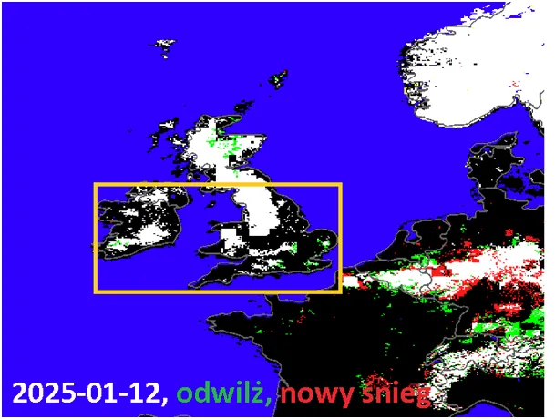
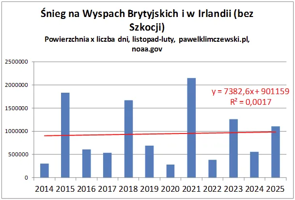

“Zimniej, czyli cieplej”, taki angielski żart.
Jak już pisałem wiele razy nasze obserwacje pogody często wskazują na Wyspy Brytyjskie, gdzie ostatnie lato było chłodne, a ostatniej zimy na ciepłych nizinach Walii i Anglii przez wiele dni zalegał śnieg. Same opady nie są zaskoczeniem, ale brak nagłej odwilży dzięki ciepłym wiatrom znad oceanu przykuł moją uwagę. Aby pozbyć się subiektywnego obrazu przeanalizowałem wszystkie, 12- letnie dane z noaa o śniegu, jakimi dysponuję. To okres zawierający dwa maksima słoneczne.
Mierzonym parametrem jest powierzchnia pod śniegiem razy liczba dni. Dane z okresów, gdy śnieg tam występuje, tj. listopad-luty. Wyłączyłem z analizy górzystą Szkocję, tam śnieg jest normą, co zakłóciłoby analizę dla obszaru, gdzie jest rzadkością.

Na pierwszej mapce żółtym zaznaczony jest obszar analiz, mapka pochodzi z 12 stycznia 2025, gdy śnieg na południu zielonej wyspy leżał już od tygodnia.

W całym 12 letnim okresie obserwujemy powolny przyrost zaśnieżenia, ale warto zwrócić uwagę na trzy ekstremalnie wysokie słupki wykresu. Są to lata, gdy śnieg leżał długo i na dużych obszarach południa wyspy. To te ekstremalne sezony mają dużą dynamikę. Jak wiemy na podstawie 40 letniej obserwacji cyklonów i ponad 200 letniej obserwacji aktywności Słońca wchodzimy w okres chłodniejszy na kilka dekad. Jeśli tak się stanie, granice zimy będą się przesuwać na południe zgodnie ze wzorem, jaki obserwujemy na tym przykładzie. Niskie temperatury oceanu będą skutkowały zimnymi wyżami schodzącymi coraz bardziej na południe. Podobne zjawisko obserwowaliśmy w tym sezonie w USA, gdy wielodniowe mrozy dotarły do subtropikalnego wybrzeża Luizjany.
Paweł Klimczewski